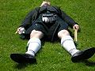

|

Helsinki Pipes and Drums drumsection:
Snare Drum: D/Sgt. Manne Laukkanen[email:manne(at)iki.fi][homepage]
- Xanten Highland Games 2008, Germany, Hornpipe & Jig, MSR, open
series,
2nd
place
- Scandinavian Pipe Band Championships 2006, Hornpipe & Jig,
experienced series, 3rd place
- Scandinavian Pipe Band Championships 2005 Grade 2 competition Drum Core Champions with Pipes and Drums of the First Royal Engineers of Stockholm
- Glasgow World Pipe Band Championships 2002 Grade 2 competition with Pipes and Drums of the First Royal Engineers of Stockholm
- SCOC 1999 MSR Intermediate 2
Snare and bass Drum: Otto Ruokolainen
Tenor Drum: vacancy!!!
WANT TO LEARN SCOTTISH DRUMMING??
|